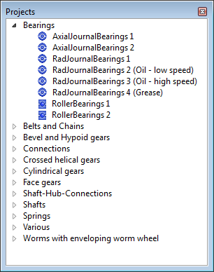

|
|
|


项目管理
KISSsoft 拥有自己的项目管理系统，可用于组织计算文件和外部文件。项目管理系统中最重要的区域是 KISSsoft 项目树（参见"项目树"章）。在其中，您可以查看当前打开或活动的项目，并查看属于各个项目的所有文件信息。

图 6.1：KISSsoft 项目树
English Original
Project Management
KISSsoft has its own project management system, which you can use to organize your calculation files and external files. The most important area in the project management system is the KISSsoft Project Tree (see chapter The project tree). In it, you can see which projects are currently open or active, and you can see all the information about the files that belong to the individual projects.
Figure 6.1: The KISSsoft project tree